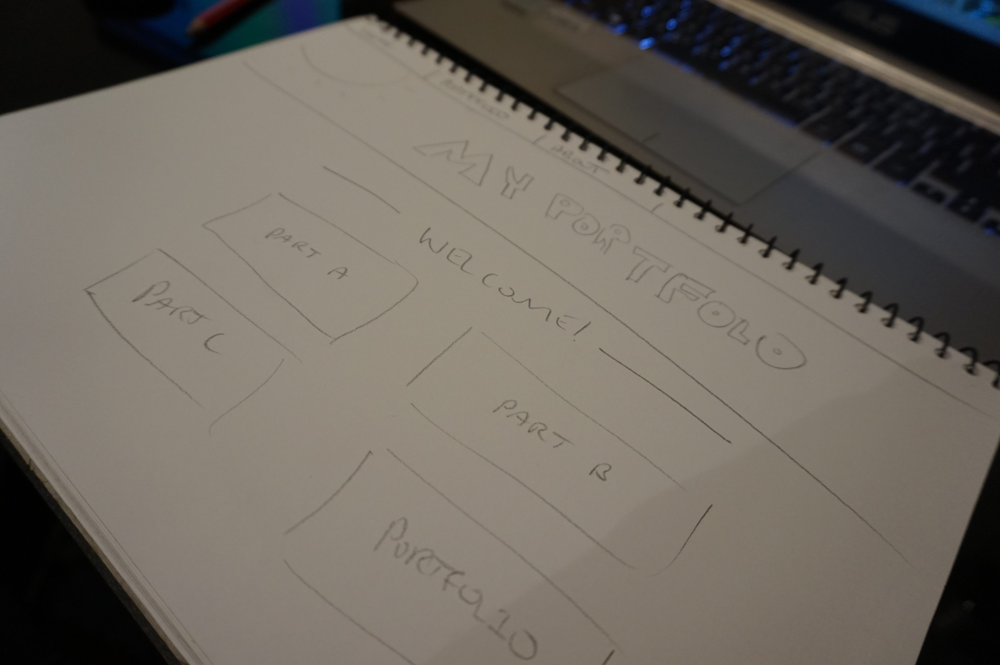
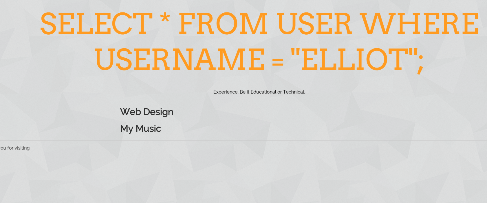
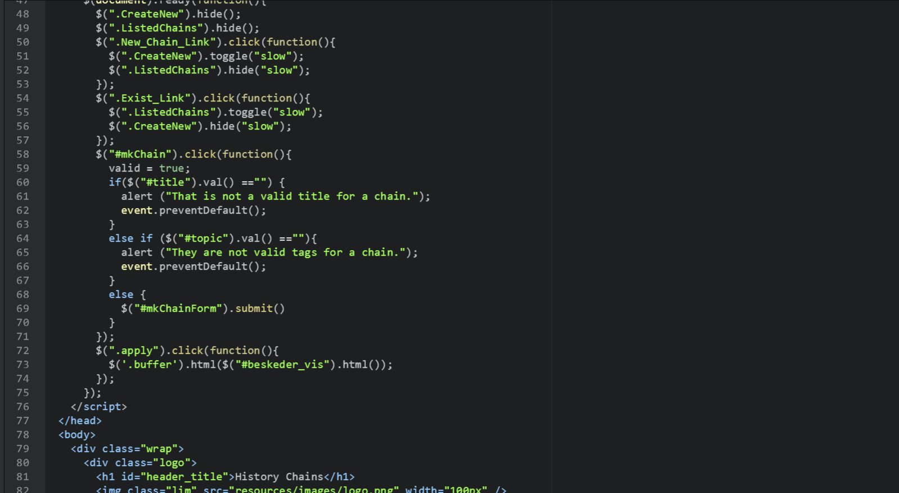

Designing the Portfolio
Like alot of my web design projects, I like to start off by designing the layout. For this project though, I wanted to do something a little different whilst incorporting my own personal flair. For me, that meant keeping things seamless, clean and sophisticated. I needed to design a container that would house the abundance of data I was to put into it. I've always been a fan of reductionism and simplicity, and I believe that this portfolio clearly deliberates this; it gives me a real sense of me. So how did I go about designing this?
Starting with simple sketches, I was able to create a containter that I thought would be suitable. Though little did I know that I would change this many times throughout the allocated task time. The first design I made, close to the start of the semester was quite plain and rushed. It looked like a static microsoft word page, and I knew that I could have done better. So I scraped the whole idea, took out the pen and paper and started again. I wanted something simple. Not Forrest Gump simple, but Ikea simple. With this in mind, I tried creating a design that people would remember, something noticable and different.
I've always been a fan of nature and really nice photography, so why not include that in my portfolio? The headers are an effective way of 'splitting' up the content on the page whilst giving the content a little 'flair' of my own. I also used the UQ Labs website as inspiration, as well as the vice website for organising large chunks of text (Hence the olswald font).

Implementing the Portfolio
The implementation stage for the portfolio has spanned over a long time. Knowing that I would change the design of the portfolio many times, I decided to start it as early as possible. I was keen to use JavaScript as a way of hiding the abundance of text and photos that are present. By using hide and fade in functions, I was able to create a system that helped me keep all of my pages and content organised in a relative and semantic manner.
During the early stage of implementation, I had created a portfolio that did not meet my expectations. I went through making many verions until I finally settled on this one. Why? I came to the problem of 'not simple enough' or 'too simple'. I believe that I have found the trade off for the two in this design. Seamless, sophisticated and in depth, I have implemented what I think to be a accurate abstraction of my design principles and beliefs.
 Reflection
Because I had spent so much time on the portfolio, I decided it was time to reflect. Going through three designs, and countless hours to create the frame, I had finally settled on one that I was satisfied with. I wanted to, and was able to create something simple, yet sophisticated, something that would represent my design approach. I believe that I have created just that. Using JQuery and CSS to hide divs, I was able to 'unclutter' the amazing amount of content I wanted to deliver. Design wise, I inherited principles from reductionism and user flow and I believe that I have create a medium that displays my work ethic and my own process.
Half the trouble I found with the portfolio was the effort to collect and display content. Sifting through all the content on my blog proved to be challenging, and I found myself spending a lot of time adjusting the content and making sure that it all made sense. I wanted to display my design process through each project, and I believe that I have done this successfully. Though I must reflect on a few adjustments that I would make to the site. The major one being the responsiveness and scale. I believe that this site does not scale suitably on smaller screens, and it was in my interest to try and figure out a way to do this. I know that I will keep adding content to my portfolio, and I hope that I can use it as a medium to help me deliver my design process to the broader community.